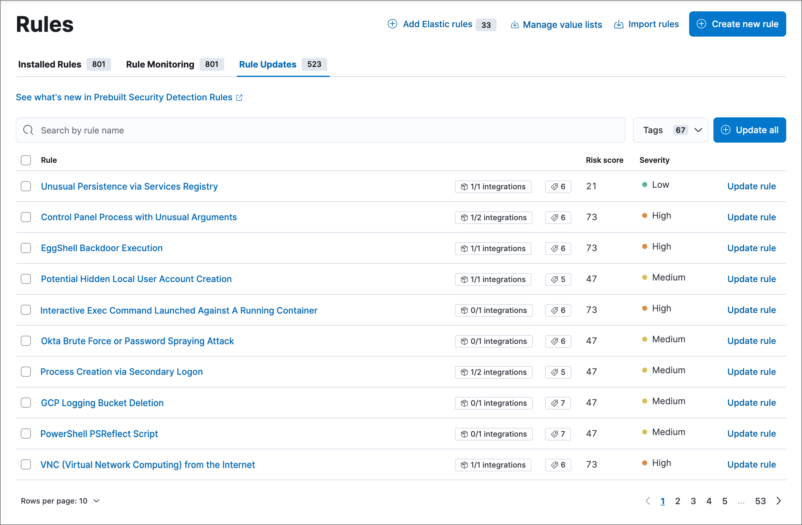

Install and manage Elastic prebuilt rulesedit
Follow these guidelines to start using the Elastic Security app’s prebuilt rules, keep them updated, and make sure they have the data needed to run successfully.
- Prebuilt rules don’t start running by default. You must first install the rules, then enable them. After installation, only a few prebuilt rules will be enabled by default, such as the Endpoint Security rule.
- You can’t modify most settings on Elastic prebuilt rules. You can only edit rule actions and add exceptions. If you want to modify other settings on a prebuilt rule, you must first duplicate it, then make your changes to the duplicated rule. However, your customized rule is entirely separate from the original prebuilt rule, and will not get updates from Elastic if the prebuilt rule is updated.
- Automatic updates of Elastic prebuilt rules are supported for the current Elastic Security version and the latest three previous minor releases. For example, if you’re on Elastic Security 8.10, you’ll be able to use the Rules UI to update your prebuilt rules until Elastic Security 8.14 is released. After that point, you can still manually download and install updated prebuilt rules, but you must upgrade to the latest Elastic Security version to receive automatic updates.
Install and enable Elastic prebuilt rulesedit
-
Go to Rules → Detection rules (SIEM). The badge next to Add Elastic rules shows the number of prebuilt rules available for installation.
-
Click Add Elastic rules.
To examine the details of a rule before you install it, select the rule name. This opens the rule details flyout.
-
Do one of the following:
- Install all available rules: Click Install all.
- Install a single rule: Click Install rule for that rule.
-
Install multiple rules: Select the rules and click Install x selected rule(s).
Use the search bar and Tags filter to find the rules you want to install. For example, filter by
OS: Windowsif your environment only includes Windows endpoints. For more on tag categories, refer to Prebuilt rule tags.
-
Go back to the Rules page, search or filter for any rules you want to run, and do either of the following:
- Enable a single rule: Turn on the rule’s Enabled switch.
- Enable multiple rules: Select the rules, then click Bulk actions → Enable.
Once you enable a rule, it starts running on its configured schedule. To confirm that it’s running successfully, check its Last response status in the rules table, or open the rule’s details page and check the Execution results tab.
Prebuilt rule tagsedit
Each prebuilt rule includes several tags identifying the rule’s purpose, detection method, associated resources, and other information to help categorize your rules. These tags are category-value pairs; for example, OS: Windows indicates rules designed for Windows endpoints. Categories include:
-
Data Source: The application, cloud provider, data shipper, or Elastic integration providing data for the rule. -
Domain: A general category of data source types (such as cloud, endpoint, or network). -
OS: The host operating system, which could be considered another data source type. -
Resources: Additional rule resources such as investigation guides. -
Rule Type: Identifies if the rule depends on specialized resources (such as machine learning jobs or threat intelligence indicators), or if it’s a higher-order rule built from other rules' alerts. -
Tactic: MITRE ATT&CK tactics that the rule addresses. -
Threat: Specific threats the rule detects (such as Cobalt Strike or BPFDoor). -
Use Case: The type of activity the rule detects and its purpose. Use cases include:-
Active Directory Monitoring: Detects changes related to Active Directory. -
Asset Visibility: Detects changes to specified asset types. -
Configuration Audit: Detects undesirable configuration changes. -
Guided Onboarding: Example rule, used for Elastic Security’s guided onboarding tour. -
Identity and Access Audit: Detects activity related to identity and access management (IAM). -
Log Auditing: Detects activity on log configurations or storage. -
Network Security Monitoring: Detects network security configuration activity. -
Threat Detection: Detects threats. -
Vulnerability: Detects exploitation of specific vulnerabilities.
-
Select and duplicate all prebuilt rulesedit
- Go to Rules → Detection rules (SIEM), then select the Elastic rules filter.
- Click Select all x rules above the rules table.
- Click Bulk actions → Duplicate.
- Select whether to duplicate the rules' exceptions, then click Duplicate.
You can then modify the duplicated rules and, if required, delete the prebuilt ones. However, your customized rules are entirely separate from the original prebuilt rules, and will not get updates from Elastic if the prebuilt rules are updated.
Update Elastic prebuilt rulesedit
Elastic regularly updates prebuilt rules to optimize their performance and ensure they detect the latest threats and techniques. When updated versions are available for your installed prebuilt rules, the Rule Updates tab appears on the Rules page, allowing you to update your installed rules with the latest versions.
-
Go to Rules → Detection rules (SIEM), then select the Rule Updates tab.
The Rule Updates tab doesn’t appear if all your installed prebuilt rules are up to date.
 -
(Optional) To examine the details of a rule’s latest version before you update it, select the rule name. This opens the rule details flyout.
Select the Updates tab to view rule changes field by field, or the JSON view tab to view changes for the entire rule in JSON format. Both tabs display side-by-side comparisons of the Current rule (what you currently have installed) and the Elastic update version (what you can choose to install). Deleted characters are highlighted in red; added characters are highlighted in green.
To accept the changes and install the updated version, select Update.

-
Do one of the following to update prebuilt rules on the Rules page:
- Update all available rules: Click Update all.
- Update a single rule: Click Update rule for that rule.
-
Update multiple rules: Select the rules and click Update x selected rule(s).
Use the search bar and Tags filter to find the rules you want to update. For example, filter by
OS: Windowsif your environment only includes Windows endpoints. For more on tag categories, refer to Prebuilt rule tags.